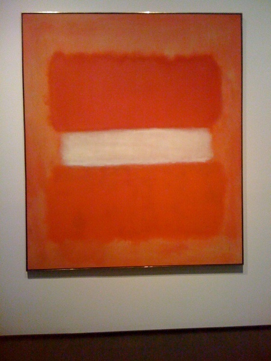
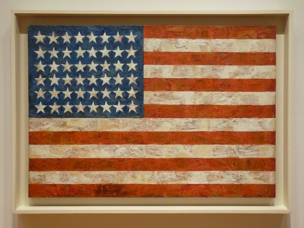

Popularity of the artist plays a major role in how expensive an artwork is. If the artist is known to be a great painter or they’re influential to their time period, their art is usually thought of as more valuable. An authentic painting by a famous artist such as Monet would always be worth a lot.
The history of the artist or painting also greatly affects how expensive an artwork is. If a piece is important to art history and had a major impact on an art style, it’s likely to be worth more. If the work of art had an interesting backstory, it’s usually more sought after.
Provenance can influence the value of a painting by a lot more than you would expect. If a painting belonged to a famous or rich person, it can become way more expensive than it was when it was bought by that person. For example, White Center by Mark Rothko was owned by David Rockfeller, which made it much more valuable. It cost $10,000 when Rockefeller bought it, but he eventually sold it for $72.8 million.
Various topics in paintings help them sell better than others. For example, paintings of sunny landscapes usually sell better than dark scenes. People usually enjoy paintings that have a calm or happy tone.
Art usually sells for a lot more if the artist has died. This is because it makes sure the artwork is unique and the artist can't replicate a painting or make something similar. In fact, the most expensive work of art sold while the artist was still living is only the 26th most expensive painting sold. Flag, by Jasper Johns, holds the record for the highest price a painting was sold for while the artist was still alive, at $110 million.
Obviously, a painting that's in good condition is more valuable than a painting in bad condition. If a painting has a tear, hole, or sun damage, it would be worth a lot less.